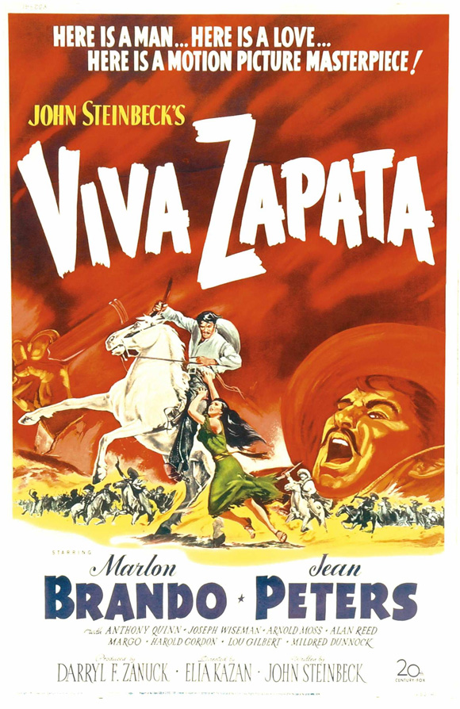

Viva Zapata!
25th Academy Awards
(Oscars 1953)
5 Nominations, 1 Award
| Nominations | ||
|---|---|---|
| Category | Nominees | Result |
| Actor | Marlon Brando | Nominated |
| Actor in a Supporting Role | Anthony Quinn | Won |
| Writing (Story and Screenplay) | John Steinbeck | Nominated |
| Art Direction (Black-and-White) | Claude Carpenter, Leland Fuller, Lyle Wheeler, and Thomas Little | Nominated |
| Music (Music Score of a Dramatic or Comedy Picture) | Alex North | Nominated |